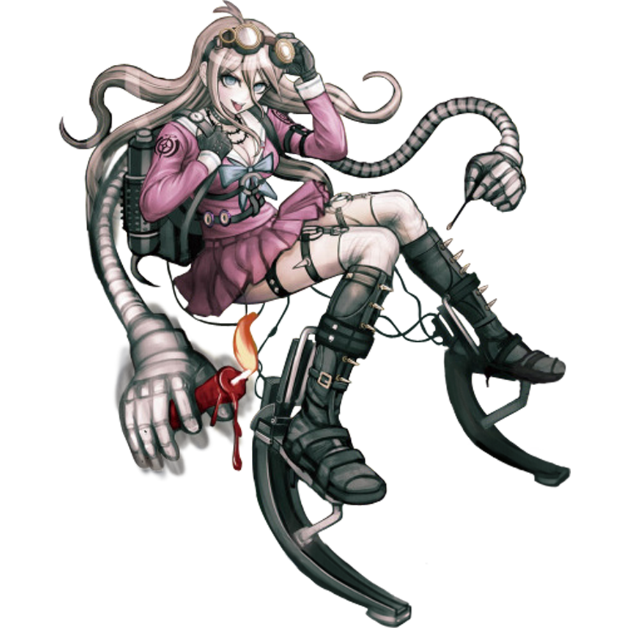

Miu Iruma
Miu Iruma (入間 美兎) is a student in the Ultimate Academy for Gifted Juveniles and a participant of the Killing School Semester featured in Danganronpa V3: Killing Harmony. Her title is the Ultimate Inventor (超高校級の「発明家」 lit. Super High School Level Inventor).
